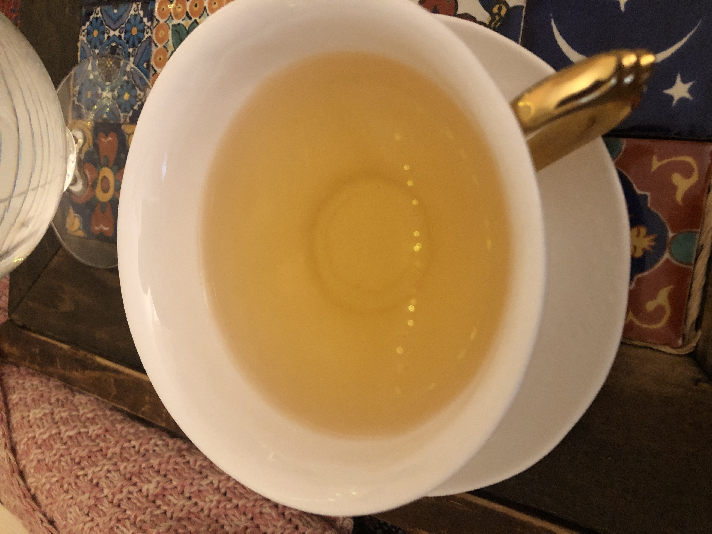

Home
Darjeeling Tea

Considered the champagne of teas (not my personal opinion, but a matter
of history), Darjeeling can range from light and flavorful to dark and heavy
depending on the flush, leaf, estate, and so on. But much of how it turns out
depends on the way it's made. Follow along to learn how to brew up a perfect
pot of what is often referred to as the finest of teas.
Ingredients
- Water (filtered is preferable)
- Darjeeling Tea Leaves
Tools
- Kettle
- Tea Pot & Tea Cups
- Food Scale (optional)
Directions
- Heat water in kettle to 185° fahrenheit / 85° celsius
- Measure leaves - I prefer 2 grams of leaves per 200ml of water
but feel free to adjust to your tastes
- Place leaves in teapot and pour the heated water over the leaves
- Let steep for 4 minutes
- Strain the tea into cups and serve